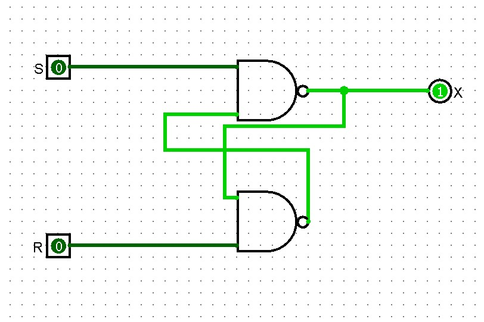
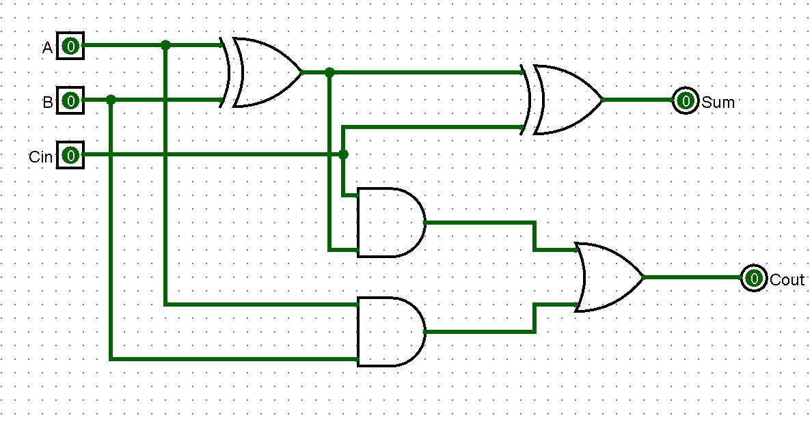
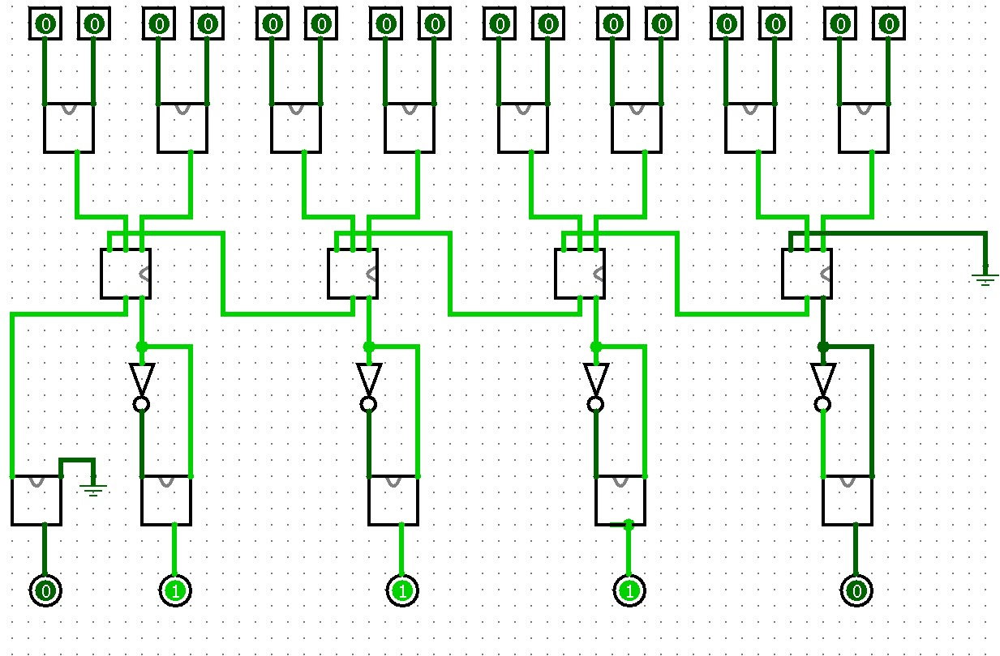

For our first project we were asked to create a 4 bit adder using logisim. This was accomplished using
a combination of SR flip-flop circuits and full adder circuits.

Fig. 1 - SR Flip-Flop Circuit

Fig. 2 - Full Adder Circuit

Fig. 3 - 4 Bit Adder Circuit